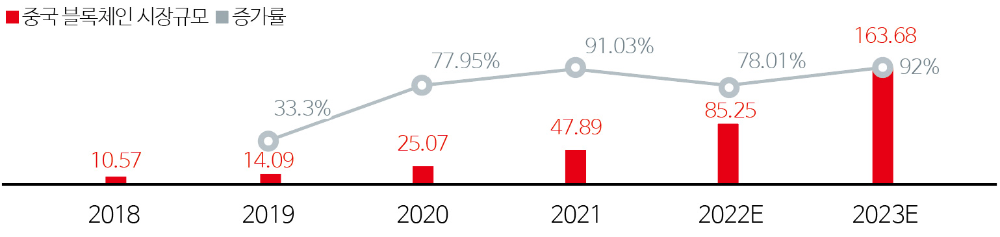

글로벌 포인트

Global Point
중국 미디어 산업의
메타버스 플랫폼 발전 현황
서옥란
(중국 연변대학교 신문방송학과 교수)
박희여
(중국 연변대학교 외국언어문학 석사과정)
-
전 세계적인 열풍과 함께 메타버스는 최근 중국 미디어 업계에서도 매우 주목하고 있는 분야로 부상하고 있다. 메타버스는 한 가지 기술 형식이 아니라 AR, VR, MR, 인공지능, 블록체인, 클라우드 컴퓨팅 등 인터넷 컴퓨팅과 디지털 미디어 상호적 기술에 의존하며 발전하는 중이다. 새로운 형태의 디지털 미디어는 다양한 기술을 통합하여 탄생했을 뿐만 아니라 물질 의존도가 높으면서도 물질세계를 초월하는 특징을 갖고 있다. 본 고에서는 메타버스에 관한 중국 정부의 정책에 대해 알아보고, 중국 메타버스의 발전 현황 및 관련 사례들을 정리하는 동시에 그 발전 전망을 살펴보고자 한다.
-
1들어가며미디어 기술이 성숙해짐에 따라 메타버스는 새로운 모습으로 대중들의 시야에 나타나고 있으며, 현실 세계와 가상공간을 연결하는 특성은 전통적인 대중매체 경험을 돌파할 뿐만 아니라 미디어, 사회, 문화 간의 관계 재구성을 촉발하고 있다. 본 고는 중국 대표적인 미디어 기업들의 메타버스 분야에서의 사업 구조에 착안하여 메타버스 분야의 발전 현황과 기술 진전을 분석하고 메타버스 접목 상황에 대해 살펴보고자 한다.
-
2메타버스 산업 발전과 응용현황
2.1.정부의 지원 정책
2022년 현재 메타버스 개념은 과학기술 기업들의 후폭풍 속에 계속 불붙고 있다. 중국은 잇달아 여러 정책을 내놓아 메타버스 산업의 발전과 혁신을 장려하고 있으며 <제14차 5개년 디지털 경제발전 계획>, <핀테크 발전 계획(2022~2025년)> 등의 산업정책은 메타버스 산업의 발전에 명확하고 광범위한 시장 전망과 기업에 양호한 생산 경영 환경을 제공하고 있다.
현재 각 지방의 정부 업무 보고와 산업 계획을 보면 메타버스 각축전이 이미 서막을 열었음을 알 수 있다.표 1장삼각지대 정부의 메타버스 산업 육성방안그 외 베이징, 푸젠 샤먼, 산둥성, 광저우 황푸구 등 지방 정부도 메타버스 산업 육성 계획을 밝히며 메타버스 관련 사업에 대한 긍정적인 입장을 제시했다. 또한 메타버스는 전국 각지의 산업 발전 계획에 빈번하게 등장할 뿐 아니라 올해 초 각지에서 잇따라 열린 양회(两会)1 에서도 화제가 되었다. 베이징시, 허페이시, 우한시, 청두시, 하이커우시, 바오딩시 등 지방이 양회에서 메타버스에 관한 제안을 발표했다. 지방 정부의 적극적인 태도는 최첨단 분야에 대해 중요하게 여기고 있음을 나타낸다.- 한 해 중국 정부의 경제, 정치 운영 방침이 정해지는 최대 정치행사로 매년 3월에 열리는 연례행사
2.2.세부 분야별 발전 현황
메타버스는 단일한 기술이 아니라 여러 가지 기술로 사회적 변혁을 대표한다. 메타버스는 5G, 인공지능, AR/VR, 클라우드 컴퓨팅, 블록체인 등 첨단 기술로 구성되어 있어 세부 분야별 시장동향을 통해 중국 메타버스의 발전의 현주소 파악이 가능하다.시장 규모
2022-2027년 중국 메타버스 시장 규모는 지속적인 성장세를 유지할 것으로 예상되며, 2027년 시장 규모는 1,263.5억 위안(한화 약 24조 3,539억 원)으로 연평균 32.98%의 복합 성장률을 기록할 것으로 예상된다.그림 12022~2027년 중국 메타버스 시장 규모 전망(단위: 억 위안)출처: 중상정보망(www.askci.com)
세부 시장
5G
현재 중국은 6G 발전에 힘을 기울이고 있으며, 인공지능 등 관련 기술의 발전으로 메타버스의 발전 환경이 빠르게 개선되고 있다. 중국 공업과정보화부(공신부)에 따르면 2020년 전국 신규 5G 기지국 수는 58만 개에 달하며, 2025년에는 누적 5G 기지국 438만 개를 건설할 예정이다
그림 22020~2025년 중국 5G 기지국 증가 전망 (단위: 만 개)출처: 화서증권연구소
인공지능
국가 정책의 경사와 5G 등 관련 기초 기술의 발전과 더불어 중국의 인공지능 산업은 각 분야의 공동 추동하에 폭발식 성장단계에 진입했고 시장 발전 잠재력이 크다. 공신부 데이터에 따르면, 2019년 중국 인공지능 핵심 산업 규모가 510억 위안(한화 9조 8,302억 원)데이터에 따르면, 2019년 중국 인공지능 핵심 산업 규모가 510억 위안(한화 9조 8,302억 원)을 넘어섰고, 2025년에는 4,000억 위안(한화 77조 1,000억 원)에 이를 것으로 예상되며 앞으로 전 세계 최대 AI 시장으로 발전할 전망이다.
그림 32019~2030년 인공지능 핵심 산업 규모 전망(단위: 억 위안)출처: 공신부 아이미디어 데이터 중심(data.iimedia.cn)
VR/AR
중국의 VR/AR 단말기 하드웨어 출하량이 급속히 증가함에 따라 VR/AR 단말기 하드웨어 시장 규모도 끊임없이 확대되고 있다. 자료에 따르면 2020년 중국 VR/AR 단말기 하드웨어 시장 규모는 각각 107억 위안(한화 2조 624억 원)과 125.9억 위안(한화 2조 4,267억 원)이었지만 2025년에는 각각 563.3억 위안(한화 10조 8,500억 원)과 1314.4억 위안(한화 25조 3,350억 원)에 이를 것으로 예상된다. 메타버스 개념이 부상하면서 VR/AR의 미래 발전에 업계의 관심이 더욱 집중될 것으로 보고 있다.
그림 42020~2025년 VR/AR 기기 시장 규모 (단위: 억 위안)출처: 아이미디어(艾媒咨询) 컨설팅(2022.1) ‘2021년 중국 메타버스 업계 이용자 행동분석 이슈보고서’
클라우드 컴퓨팅
클라우드 컴퓨팅의 경우, 2021년 중국 클라우드 산업 규모는 2,109.5억 위안(한화 40조 6,606억 원)에 달했고 성장률은 26.3%로, 2023년 3,000억 위안(한화 57조 8,250억 원)을 돌파할 것으로 예상된다. 이는 중국 클라우드 산업이 메타버스 발전에 좋은 연산 기반을 제공할 수 있을 것으로 보인다.
그림 52018~2023년 클라우드 컴퓨팅 산업 규모 증가 전망 (단위: 억 위안, %)출처: 아이미디어 컨설팅(2022) ‘2021년 중국 메타버스 업계 이용자 행동분석 이슈보고서’
블록체인
블록체인 기술은 탈중심화된 결제 플랫폼과 가치 전달 메커니즘을 제공하여 메타버스의 가치 귀속과 흐름을 보장함으로써 경제 시스템의 안정적이고 효율적인 운영을 보장하고 규칙의 투명성과 확실성 집행을 보장한다. 첸잔산업연구원(前瞻产业研究院)에 따르면 중국 블록체인 시장이 고속 성장을 지속하여 2021-2026년 시장 규모가 연간 73%, 2026년 163.7억 달러에 달할 것으로 분석하고 앞으로 20년 동안 중국 블록체인 업계 시장 규모는 1 조 위안(한화 192조 7,000억 원) 수준에 달할 전망이다.
현재 중국은 5G, 클라우드 컴퓨팅, 인공지능, 블록체인, AR/VR 기술이 점차적으로 성숙하고 시장 규모도 매년 확대되면서 중국 메타버스 산업 발전의 발판을 마련했다. 완비된 산업 체인과 기술, 방대한 시장 규모는 중국 메타버스 산업이 천연의 발전 우위를 갖추게 하였다.그림 62021~2026년 블록체인 산업 시장 규모 및 증가 상황 (단위: 억 위안, %)출처: 첸잔산업연구원
2.3.메타버스 응용 상황
메타버스는 업계의 광범위한 관심을 받아 전 세계적으로 메타버스의 응용 장면 탐사에 박차를 가하였다. 메타버스의 응용도 기술 발전에 따라 끊임없이 심화되는 과정이다. 단기적으로는 소셜 엔터테인먼트, 레크리에이션, 교육 훈련 등의 분야에서 이용자에게 몰입 체험 서비스를 제공한다. 중기적으로 보면 기술 연구개발을 위한 시뮬레이션 플랫폼 제공이 메타버스 기술의 주요 응용 시나리오가 될 것으로 보인다. 장기적으로는 생명과학, 물질과학, 해양과학, 지구와 공간 과학, 정보과학 등 분야의 선행 탐구 연구가 메타버스 기술의 중요한 활용처가 될 수 있다. 전체적으로 보면, 현재 많은 기업들이 메타버스 사업에 뛰어들고 있고 메타버스 응용은 아직 시작 단계에 있으나 자세히 들여다 볼 필요가 있다. -
3주요 미디어기업의 메타버스 적용 사례중국 유명 IT기업 텐센트(Tencent), 바이트댄스(ByteDance), 알리바바(Alibaba) 등도 세계적인 메타버스 열풍에 동참하는 움직임을 보이고 있다. 이러한 새로운 열풍 속에서 중국 메타버스 플랫폼의 발전상을 구체적으로 살펴보고자 한다.
3.1.텐센트
텐센트는 소셜 네트워크와 UGC 생태에 집중되어 있고, 그 외 다중접속 게임과 이미지 엔진분야에서도 경쟁력을 보유하고 있다.
그림 7텐센트의 메타버스 구조출처: 청화대학(2021.9) ‘2020~2021년 메타버스 발전 연구 보고’
2012년 텐센트는 에픽 게임스(Epic Games)의 지분 49.9%를 3억 3000만 달러에 인수했고, 2020년 텐센트는 메타버스 제1주 ‘로블록스(Roblox)’의 G 라운드 파이낸싱에 참여했다. 이어 2021년 텐센트는 중국 내수용으로 판매를 독점 대리하는 중국판 로블록스를 출시했다.
텐센트가 투자한 Soul은 ‘젊은 층의 소셜 메타버스’라는 타이틀에 걸맞게 사용자가 30초간 ‘영혼 감정’을 마치면 자신과 취향이 맞는 사람을 찾아 자유롭게 세계를 표현하고 인지하며 자신만의 ‘소셜 메타버스’를 만들 수 있다.
텐센트가 자체 개발한 ‘센티미터쇼(厘米秀)’2는 사실상 저배형(낮은 버전) 소셜 메타버스라고 볼 수 있다. 현재 QQ3에 적용되어 ‘슈퍼 QQ쇼’라는 사용자 간 가상 소셜네트워크 서비스로 활용되고 있다. 슈퍼 QQ쇼는 전면 입체3D로 진화됐고 AI 얼굴 조작, 가상 공간, 엔터테인먼트 등 새로운 체험 서비스를 제공 중이다. 이는 단순한 명함 전시(Business card display function)기능이 아니라 생생한 아바타가 Z세대 이용자들의 리얼함과 개성을 더욱 부각시키고 있다.
- 센티미터쇼는 핸드폰 QQ6,2,2 버전으로 출시된 중요한 기능으로 PC 단말기의 QQ쇼를 핸드폰 단말기로 이동하는 것과 같다.
- QQ는 1999년 2월 텐센트가 자체 개발한 인터넷 기반의 실시간 통신 메신저 툴이다. QQ는 온라인 채팅, 영상통화, 파일 공유, QQ메일 등 여러 가지 기능을 지원하며 다양한 통신 단말기에서 사용할 수 있다.
3.2.바이트댄스
바이트댄스는 틱톡의 모회사로 메타버스 분야에서도 UGC(User Generated Contents) 생태와 확장현실, 소셜 네트워크에 집중되어 있다.
그림 8바이트댄스의 메타버스 구조출처: 청화대학(2021.9) ‘2020~2021년 메타버스 발전 연구 보고’
바이트댄스의 메타버스 추진 구조
하드웨어 및 운영체제: 바이트댄스는 2021년 8월 말 VR 하드웨어 제조사 피코(Pico)를 프리미엄의 9배, 15억 달러에 인수했다. 피코는 현재 349건의 허가 특허를 포함하고 범위는 이미 그래픽, 음향, 광학, 하드웨어와 구조설계, 운영체제 하부 최적화, 공간 포지셔닝과 동작 추적 등 VR 핵심기술 분야를 포괄하고 있다.
베이스 구조: 2021년 4월 바이트댄스는 1억 위안(한화 약 193억 원)을 들여 메타버스 회사인 코드 건곤에 투자했다. 코드 건곤은 2018년에 설립되었으며, 주요 사업으로는 소셜 UGC 플랫폼 ‘리셋 월드’가 있다. ‘리셋 월드’는 코드 건곤이 자체 개발한 상호 물리엔진 기술 시스템을 기반으로 개발되었으며, 이용자 자유도가 높은 크리에이터 플랫폼과 참여도 높은 젊은 층의 소셜 플랫폼으로 구성되어, 이용자들의 게임 엔터테인먼트 체험을 충족시키는 데 주력했다.
콘텐츠 및 장면: 최근 동남아 지역에서 ‘픽스소울(Pixsoul)’이라는 제품을 출시해 AI 아바타 생성 기능을 주력으로 하고 있다. 픽스소울이 노리는 것은 얼굴 조작을 통한 사교적 가능성이다. 픽스소울은 현재 두 개의 고화질 필터를 제공하고 있으며 그 중 하나가 아바타(Avatar)다. 아바타는 사용자의 사진을 3D 이미지로 변환시켜 비디오 게임 속 가상 캐릭터로 만든다.
2022년 1월 바이트댄스는 ‘파티 아일랜드’라는 메타버스 소셜 앱을 출시해 사용자들이 자신만의 아바타를 만들고, 친구들과 채팅, 쇼핑하고, 영화를 보며, 몰입감 있는 소셜 체험을 즐길 수 있다. 지금까지 바이트댄스는 메타버스의 구조에서 수백억 위안을 쏟아부었고, 소셜 소프트웨어, VR 하드웨어와 가상인물을 포함하여 구조가 광범위하다고 할 수 있다.
3.3.바이두
포털검색업체 바이두(Baidu)는 ‘시랑(希壤)’이라는 메타버스 앱을 출시했다. 시랑은 한번에 최대 100,000명을 수용할 수 있는 일종의 가상 세계이다. 시랑 가상 세계에서 모든 사용자는 아바타3D 캐릭터를 가지고 있으며 아바타를 통해 고객이나 파트너와 즉각적인 언어, 상호작용, 커뮤니케이션을 할 수 있다.
바이두는 장기간 강도 높은 연구개발 투자를 유지하고 있다. 2020년 매출에서 바이두의 핵심 연구개발 비용이 21.4%에 달할 정도로 중국 대형 IT 기업 중 연구개발 투입 강도가 가장 높다. 차세대 인터넷을 탐색하는 과정에서 바이두의 노력은 메타버스 엔진이 되어 시랑을 비롯한 메타버스 제품에 AI와 클라우드 컴퓨팅 능력을 제공하는 방향으로 추진됐다.
3.4.넷이즈
넷이즈(NetEase)는 1997년 딩레이(丁磊)에 의해 설립됐으며 주요 인터넷 기업 중 하나이자 중국 2위 게임회사다. 2022년 1분기 2년차 글로벌 게임 UGC 크리에이터 플랫폼을 출시한다고 밝혔다. 넷이즈는 최근 메타버스 착륙을 겨냥해 가상 공간을 구축한 건설사(builder), 가상 캐릭터 아바타 크리에이터 등을 채용하고 있는 것으로 드러났다.
넷이즈는 앞서 ‘넷이즈 메타버스’, ‘레이화 메타버스(雷火元宇宙)’, ‘복희 메타버스(伏羲元宇宙)’등의 상표 등록을 신청했다. 넷이즈는 현재 야오타이(瑶台) 몰입형 이벤트 시스템, AI 가상 앵커, 스타 블록체인 등 메타버스 콘셉트 제품을 선보이고 있으며 여러 가상 인물 분야 혁신 기업에 투자하고 있다.
3.5.알리바바
알리바바는 실제 2016년 ‘Buy+’ 쇼핑 프로젝트를 선보인 바 있다. 2021년 윈치 대회(云栖大会)에서는 AR/VR 분야에서의 배치(구조)와 활용도를 대중에게 알렸다. 과학기술권에 메타버스 바람이 불면서 알리바바도 다마원(达摩院) XR 실험실을 설립하여 메타버스 관련 기술을 전문적으로 연구하고 있다.
‘Buy+’ 쇼핑 프로젝트
2016년 11월 1일 타오바오(淘宝)의 VR 쇼핑 ‘바이플러스(Buy+)’가 정식 오픈했다. ‘Buy+’는 컴퓨터 그래픽 시스템과 보조 센서를 이용하여 상호작용이 가능한 3차원 쇼핑 환경을 만든다. 사용자가 직접 가상 세계의 사람과 사물을 상호작용할 수 있다. 심지어 현실 생활의 장면까지 가상화하여 상호작용이 가능한 상품이 된다.
다마원(达摩院) XR 실험실
알리바바는 2021년 10월 메타버스 바람을 타고 산하 다마원 연구소에 XR 실험실을 설립하여 AR, VR, 메타버스를 기반으로 관련 기술 연구를 하고 있다. 메타버스의 활용 범위를 라이브 커머스, 결제, 소셜, 게임, 교육 등 다양한 분야로 확장한다.
2021년 9월 알리 클라우드 게임 사업부는 클라우드 게임과 개발자 플랫폼을 제공하는 새로운 브랜드 ‘위안징(元境)’을 발표했다. 위안징은 메타버스 내 새로운 인프라를 만들고, 클라우드 게임 및 체험을 제공하며 메타버스 기반 기술의 발전을 뒷받침하고 있다. 또한 ‘알리 메타버스’, ‘타오바오 메타버스’ 등 다양한 상표 등록도 신청했다.
3.6.아이치이
중국에서 대량의 양질의 콘텐츠 판권을 보유하고 있는 아이치이(iQIYI)가 드라마 IP를 내세우며 메타버스에 발을 들여놓았다. 아이치이의 가상 공간 구축은 모두 콘텐츠 위에 바탕을 두고 있다. 2021년 3월 아이치이는 세계 최초로 LED 기반 버추얼 프로덕션 방식으로 제작한 XR 라이브 콘서트 ‘THE9’ 허실의 도시 XR 몰입형 가상 콘서트를 선보였다. XR 등 기술을 활용해 관객이 직접 체험할 수 있도록 했다.
최근 방영된 드라마 <풍기낙양(风起洛阳)>은 아이치이가 현재 주력하고 있는 중국 역사문화 특색 시리즈로 IP ‘화하 고성 우주(华夏古城宇宙)’4의 작품이다.
- ‘화하 고성 우주’는 아이치이가 만든 다원적인 오락 형태의 파노라마 콘텐츠로 중국 전통문화에 입각하여 전 세계 이용자를 위해 중국 화하문명 역정을 재현한 중국의 역사문화 특색을 지닌 시리즈 IP이다.
아이치이는 <풍기롱서(风起陇西)>, <광저우 13행(广州十三行)>, <양경 15일(两京十五日)> 등 지역 문화가 뚜렷한 드라마를 계속 만들고, 다양한 콘텐츠 형태의 개발과 통일된 세계관 구축을 진행하며, 서로 다른 이야기 간의 인물, 시간, 공간, 사건의 장벽을 허물고, 최종적으로 하나의 문화적 핵을 가진 ‘우주급 IP’를 형성한다.
<풍기낙양(风起洛阳)> 테마의 디지털 컬렉션은 아이치이가 콘텐츠 IP로 메타버스에 진출한 첫걸음으로 볼 수 있다. 디지털 컬렉션은 IP 가치를 검증하여 이용자의 신분 표지, 장식 등이 될 수 있다.
지난 2019년 국내 최초의 가상 아이돌 그룹 ‘리치붐(RiCH BOOM)’을 출시했다. 2021년 10월 드라마 <사자를 꿈꾸다(梦见狮子)>에서 리치붐의 멤버 재스민(小茉莉)이 출연하며, 국내에서 처음으로 가상 아이돌이 실제 드라마에 출연했다.
3.7.징둥
징둥(JD)은 중국 최대의 쇼핑 대목인 광군제(11.11)기간 징둥수입마트에서 메타버스 가상 방송 모드를 가동하여 실시간 XR 가상방송 기술을 징둥역 내에 적용하였다. 징둥인터내셔널과 XR 라이브 헤드 회사 제락무궁(齐乐无穷)의 첫 협업으로 진행된 이번 생방송은 가상 앵커 ‘ViVi 자함’이 가상 라이브 룸에서 실시간으로 소통하고 사용자는 모바일, PC에서 직접 시청할 수 있으며 VR 안경을 착용하면 가상상품을 들고 피팅 및 360도 시청이 가능하여 디지털화된 새로운 쇼핑 체험을 가져올 수 있다. 쉽게 말하면 메타버스에서의 라이브 커머스의 기초 기능을 실현한 것이다. 이번 가상 생방송은 30만 명에 육박하는 시청률을 기록하기도 했다. 새로운 디지털화 체험은 XR 기술이 라이브 커머스 산업의 진일보에 가져온 엄청난 잠재력과 가치를 보여준다.
그림 9가상앵커 “ViVi자함” 라이브 커머스 현장징둥소형 가전은 ‘초NEW메타버스’의 세계관을 내세우고, 이러한 상상력과 미래 공상과학기술을 담은 몰입형 개념으로 메타버스 속 새로운 트렌드의 소형 가전 모습을 그려내며, 사용자에게 혁신을 보여주었다. 11.11기간이 시작 된 후 5분 간 거래액은 20억 위안(한화 3,873억 원)을 돌파하였고 가전제품 세트 구매 거래액은 전년 동기 대비 6배 이상 증가했다.
한편, 징둥은 디지털 소장품 거래 플랫폼인 ‘영희(灵稀)’를 출시해 구매자가 디지털 소장품을 연구, 전시, 감상, 소장할 수 있도록 했다. 이를 바탕으로 ‘징둥’은 개방형 생태 플랫폼 체계를 구축하고 일체화 중체(中台, 미들 엔드)솔루션과 개발자에게 디지털 트윈의 복각 기술, 디지털 세계 시뮬레이션 최적화 기술 등 메타버스 산업의 기반 기술을 지원한다. 또한, 콘텐츠 생산의 주력군인 미디어는 메타버스로 진출하는 과정에서 콘텐츠 혁신과 업무의 결합이라는 새로운 시도를 진행했다.
3.8.호남타이/망고TV
호남타이/망고TV가 출시한 ‘망고환성(芒果幻城)’은 피코, 아이치이치우, NOLO등 VR 플랫폼에 출시됐다. 망고환성의 핵심 분야는 소셜플랫폼으로 낯선 사람의 소셜 플랫폼을 진입로로 삼아 Z세대 이용자를 겨냥한 게임 오락, 표류병, 판타지 공간 랜덤 페어링 등 소셜 기능을 만든다.
3.9.텐센트 비디오
텐센트 비디오(Tencent Video)는 리얼리티 게임 프로그램인 <원어주(圆鱼洲) 로그인>을 출시하여 스타 6명이 플레이어로 등장해 10박 10일 동안 원어주에서 미스터리한 도전 미션을 수행한다. 채널을 통해 ‘이차원’ ‘전송’ 등의 콘셉트를 설정했고, 전체 프로그램은 ‘과학기술적 감각’을 충분히 갖추고 있다.
3.10.안후이타이
‘안후이위성’은 2022년 5월 20일 안후이위성TV가 조랑메타버스와 공동으로 제작한 <디지털대표(数字台标)>를 메타버스 상에서의 디지털 소장품으로 발행했다. 이 컬렉션은 안후이위성TV 브랜드 이념인 ‘대애전만가(大爱传万家)’를 주제로 시청자들에게 가장 클래식한 국내 신예 아티스트들과 디지털 리메이크 작업을 진행하여 5가지의 다양한 컬렉션을 내놓았다.
3.11.강서신문미디어그룹
‘도시수장(城市数藏)’은 강서신문미디어그룹 산하의 간상미디어(赣商传媒)가 메타버스에 진출한 첫 번째 제품이다. 강서신문미디어그룹의 양질의 콘텐츠 라이브러리 및 IP 개발체계 등의 강점을 바탕으로 콘텐츠 생태계 내 가치와 소장 잠재력을 갖춘 디지털 컬렉션을 개발하고 운영한다. 이 밖에도 간상미디어는 X 메타플랫폼과 업무협약을 통해 전략적 투자를 진행했다.
-
4마치며앞선 사례에서 볼 수 있듯이 2021년 ‘메타버스 붐’을 거치면서 기업들이 메타버스라는 트랙에 적지 않은 자금을 쏟아부으면서 일부 전략적 유사성이 나타났다.
메타버스는 본질적으로 현실 세계에 대한 가상화, 디지털화 과정이다. 메타버스의 높은 실시간성, 상호 작용성과 몰입감은 가상공간이 대량의 사용자를 수용하여 실시간으로 온라인 교류를 할 수 있도록 요구한다. 앞으로 메타버스는 소셜, 게임과 콘텐츠 체험 등을 주요 매개체로 하고 소비, 금융과 생활 서비스 등의 실제 세계의 요소가 끊임없이 가상 생활에 융합될 것이고 가상경제 체계도 점차 폐쇄 고리를 형성하며 새로운 가상 경제 생태계가 진일보 형성될 것이다.
또한 한국은 중국과 마찬가지로 지금은 게임, 엔터테인먼트, IT인프라 등의 분야에서 메타버스 기술이 적용되고 있지만 향후 제조업, 농업으로도 영역이 확대되면서 메타버스 제조 산업, 농업 생태계 구축이 필요하다. 그리고 메타버스는 다국적 특징을 가지고 있기에 업계에서는 메타버스에 대해 탐색적이고 건설적인 협력과 소통을 전개할 것을 권고한다. 메타버스 산업의 경쟁력 제고를 위한 시장규제, 데이터보호, 금융규제 등의 분야에서 입법을 강화하고 데이터, 개인 프라이버시, 거래 등에 대한 후속 조치로 관련 법규를 개정할 필요가 있음을 시사한다.
본 고에서는 메타버스에 관한 중국 각 지방 정부의 육성 방안에 대해 알아보았고 구체적인 사례를 통해 지금 중국의 메타버스 발전 현황에 대해 초보적으로 그림을 그려보았다. 중국 정부가 메타버스와 같은 신개념 시장의 위험성에 대해 경고했음에도 불구하고, 중국 빅테크들은 ‘메타버스’라는 미래 시장을 적극적으로 선점하고 있다. 앞에서 볼 수 있듯이 이미 여러 지방정부에서는 메타버스 관련 지원 정책이 나오고 있는 상황이다. 따라서 중국은 국가 차원의 메타버스 정책을 내놓아야 할 필요가 있고 향후 메타버스의 발전 과정에서 발생할 수 있는 문제에 대해 기업과 미디어 업계는 끊임없이 고민해야 할 필요가 있다.
메타버스는 발전 초기 단계이며 국내외 과학기술 기업들도 메타버스의 생태계를 적극적으로 배치하고 구축해 나가고 있다. 가상현실, 인공지능, 블록체인, 빅데이터와 5G 등 기술이 발전함에 따라 메타버스는 우리만의 산업 발전을 맞이하여 더 풍부하고 편리하며 스마트한 삶을 가져다 줄 것이다. -
Reference
- www.askci.com
- 화서증권연구소(2019.9), 메타버스: 다음 생태계 테크놀로지 메인 라인.
- data.iimedia.cn
- 아이미디어(艾媒咨询) 컨설팅(2022.1) ‘2021년 중국 메타버스 업계 이용자 행동분석 이슈보고서’.
- 아이미디어(艾媒咨询)컨설팅(2022) ‘2021년 중국 메타버스 업계 이용자 행동분석 이슈보고서’.
- 첸잔산업연구원(2021), 2021년 중국 블록체인 업계 시장 현황 및 발전 전망 분석.
- 청화대학(2021.9) ‘2020~2021년 메타버스 발전 연구 보고’
- 공재춘.2022.1.26, 2022 중국 메타버스 백서.